KAN: Kolmogorov-Arnold Networks

| Architecture Type | Edge-Activation Network (Spline-based) |
|---|---|
| Key Innovation | Replacing linear weights with learnable univariate activation functions on edges. |
| Performance Metric | Faster neural scaling laws ($N^{-4}$ vs $N^{-2}$ for specific tasks) and higher accuracy with fewer parameters. |
| Computational Efficiency | More parameter-efficient for function fitting, though currently slower per-parameter training due to spline evaluation. |
| Venue | International Conference on Learning Representations |
| Year | 2024 |
| Citations | 1543 |
| DOI | Link |
Kolmogorov-Arnold Networks (kans) are a novel class of neural network architectures that challenge the dominance of Multi-Layer Perceptrons (MLPs). Inspired by the Kolmogorov-Arnold representation theorem, kans replace fixed activation functions on nodes with learnable activation functions on edges, parameterized as splines. This structural shift allows kans to achieve superior accuracy and interpretability compared to MLPs, particularly in scientific computing tasks, while demonstrating faster neural scaling laws.
Theoretical Foundation: The Kolmogorov-Arnold Theorem
The mathematical bedrock of kans is the Kolmogorov-Arnold representation theorem, which states that any multivariate continuous function can be represented as a finite sum of continuous univariate functions of a single variable. While MLPs are based on the Universal Approximation Theorem, kans directly implement the structure suggested by Kolmogorov and Arnold.
Specifically, for a function of $n$ variables, the theorem guarantees a representation using $2n+1$ inner functions and a set of outer functions. kans generalize this by stacking these structures into multiple layers, creating a deep architecture that can learn complex hierarchical representations.
Architecture: Learnable Edges vs. Fixed Nodes
In a traditional MLP, data is multiplied by a fixed linear weight and then passed through a fixed activation function (like ReLU or sigmoid) at the node. kans eliminate linear weights entirely. Instead, each edge in the network is a learnable univariate function, typically represented as a b-spline.
Nodes in a kan simply perform a summation of the incoming signals from the edges. This 'weight-on-edge' approach allows the network to adapt its activation functions locally to the data, enabling much greater flexibility in function approximation. Figure 1 compares this structure directly with the MLP.
Spline Parameterization and Grid Extension
To make the edge functions learnable, kans use b-splines, which are piecewise polynomial functions defined by a grid of points. The grid density can be increased during training—a process called 'grid extension'—allowing the network to refine its approximation of complex functions without retraining from scratch.
Each edge function is a combination of a base function (like kan edge functions.">silu) and a spline component. This hybrid approach ensures that the network has a global 'shape' while being able to capture fine-grained local details.
Interpretability and AI for Science
One of the most significant advantages of kans is their interpretability. Because the edge functions are univariate, they can be easily visualized and often simplified into symbolic mathematical expressions. This makes kans ideal 'collaborators' for scientists looking to discover physical or mathematical laws.
The researchers demonstrated this by using kans to rediscover the knot polynomial relation in mathematics and scaling laws in condensed matter physics. By pruning weak connections and performing symbolic regression on the learned edge functions, users can extract human-readable formulas from the trained model.
Concept Breakdown
A theorem stating that multivariate continuous functions can be decomposed into a sum of univariate functions, providing the theoretical basis for kans.
Instead of fixed functions like ReLU, kans use univariate functions on edges that are optimized during the training process.
Piecewise polynomial functions used to parameterize the activation functions on kan edges, allowing for flexible and local control of function shape.
A technique in kans where the number of spline grid points is increased to improve the resolution of the learned functions during training.
The process of identifying simple mathematical formulas that approximate the learned univariate functions in a kan, enhancing interpretability.
Mathematics
KAN Layer Transformation
| Symbol | Meaning |
|---|---|
| $x_p$ | p-th input variable |
| $\phi_{q,p}$ | Learnable univariate activation function on the edge between input p and output q |
| $y_q$ | q-th output node |
Edge Function Decomposition
| Symbol | Meaning |
|---|---|
| $b(x)$ | Basis function, typically SiLU(x) |
| $\text{spline}(x)$ | The B-spline component of the activation function |
| $w$ | An overall scaling weight |
Figures and Explanations
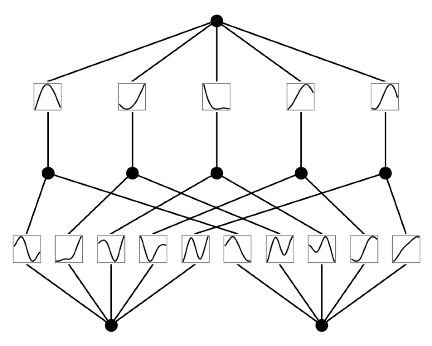
Diagram contrasting the MLP architecture (fixed node activations, learnable weights) with the KAN architecture (learnable edge activations, summation nodes).
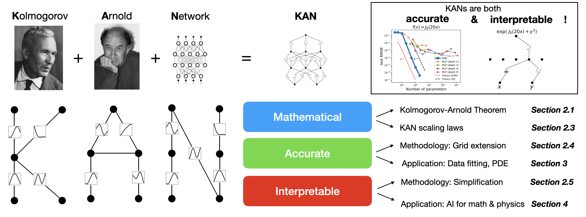
Illustration of the Kolmogorov-Arnold representation theorem as a two-layer KAN-like structure.
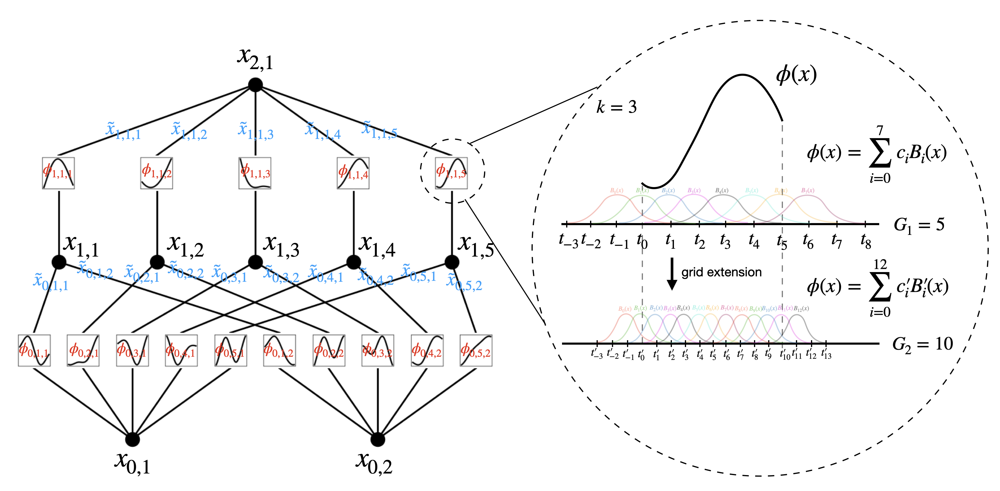
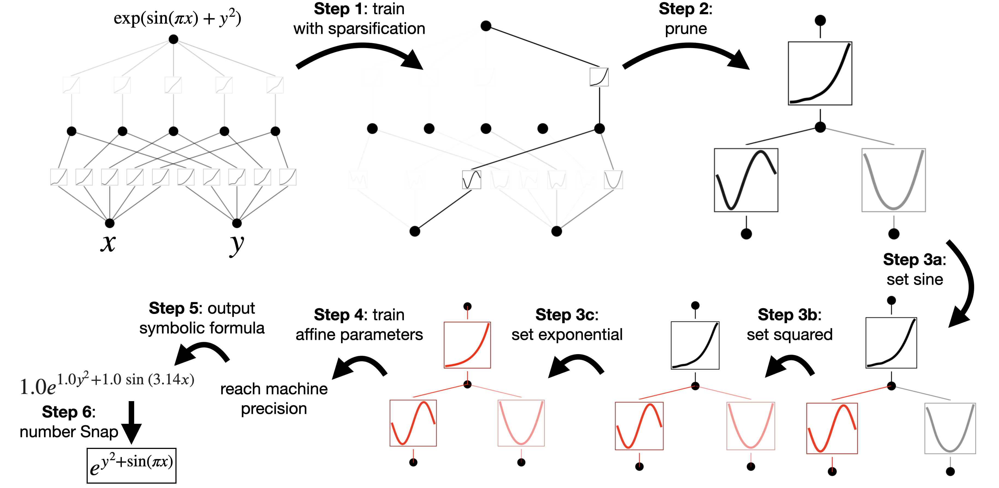
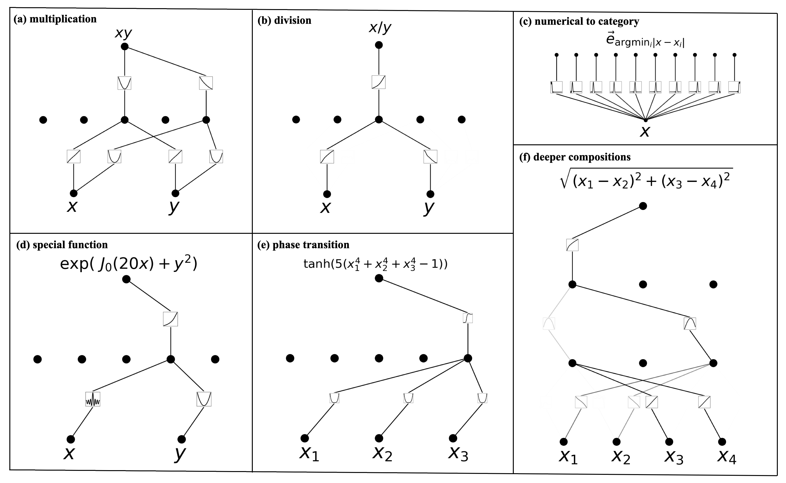
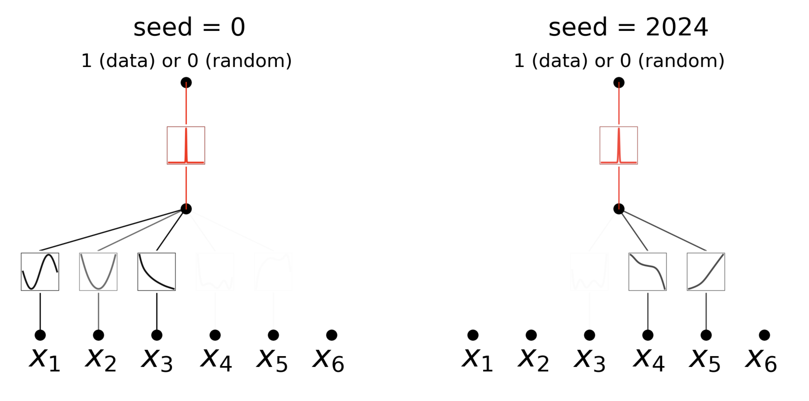
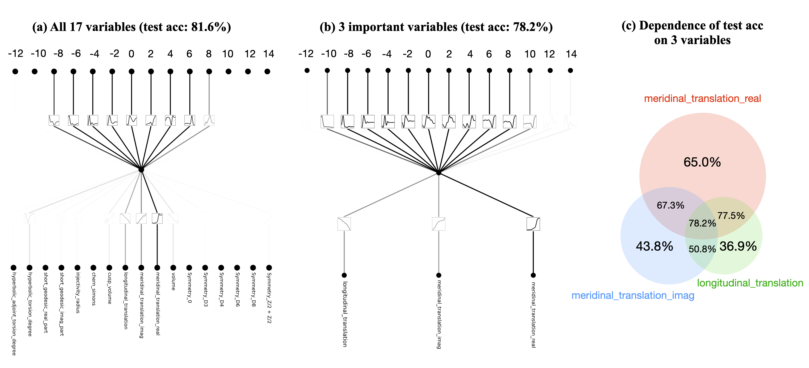
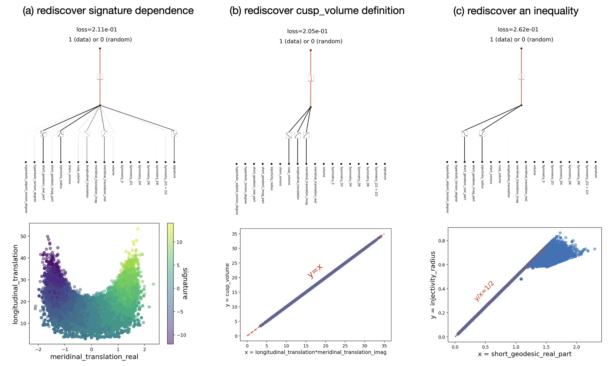
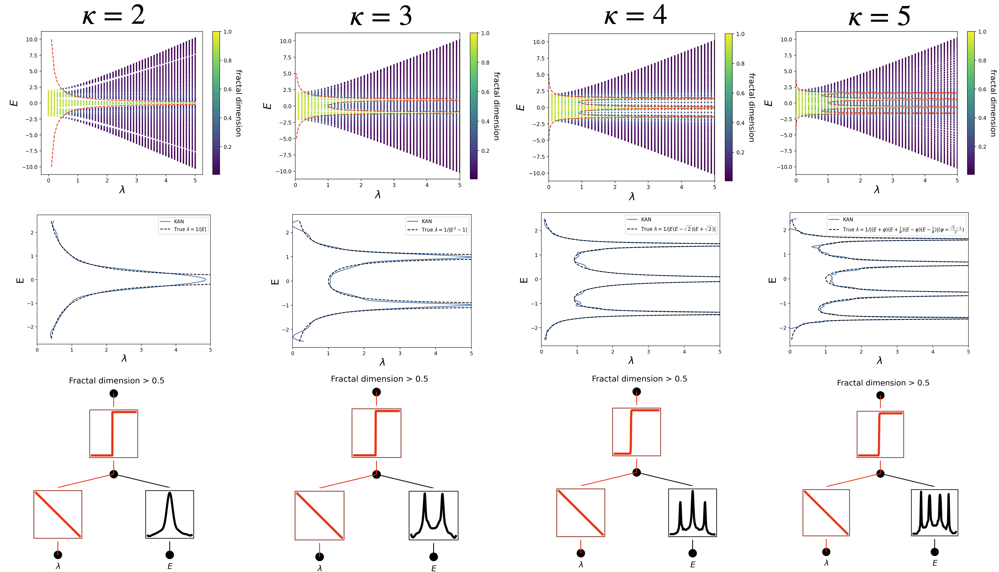
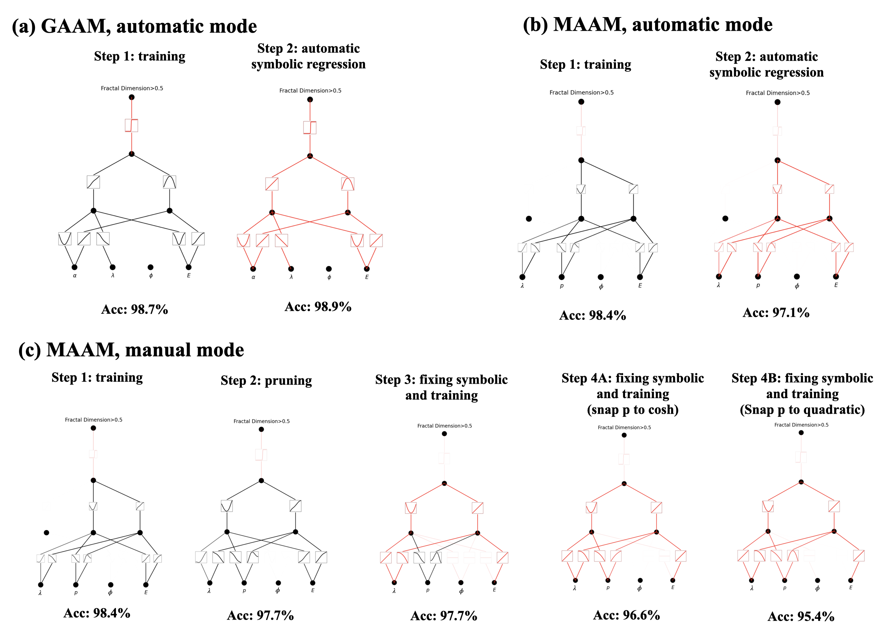
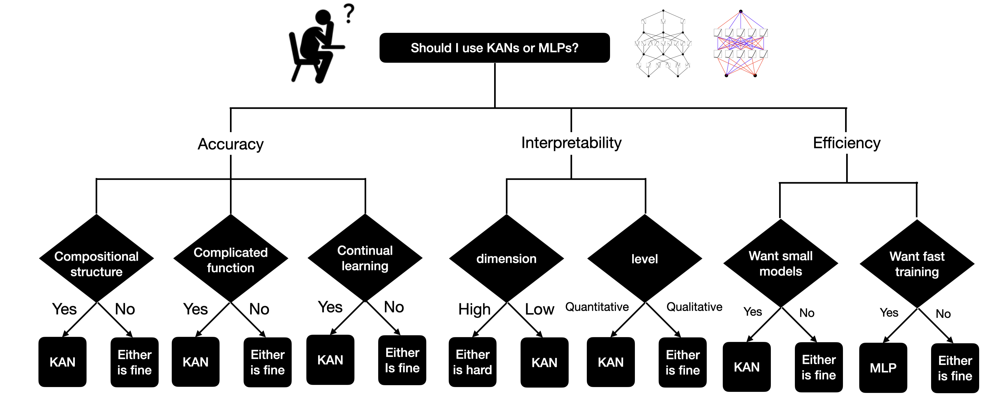
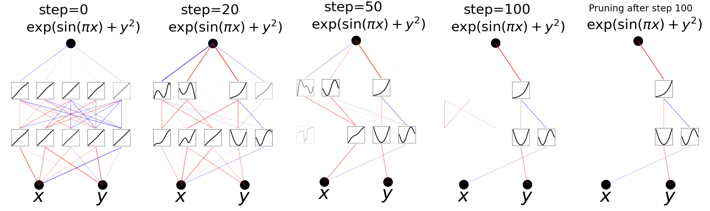
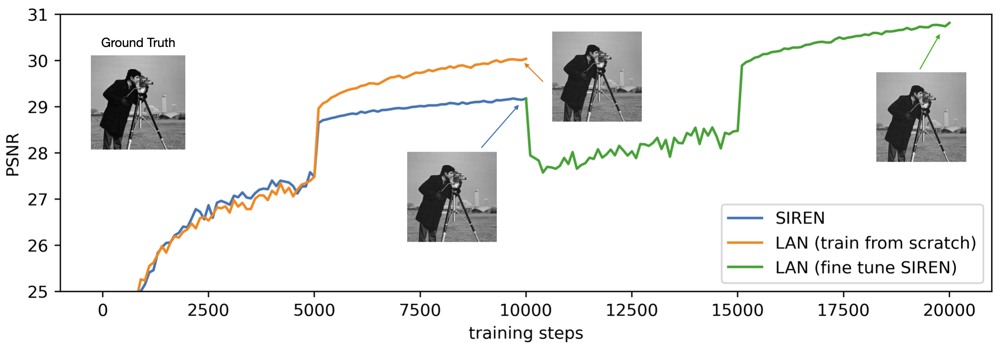
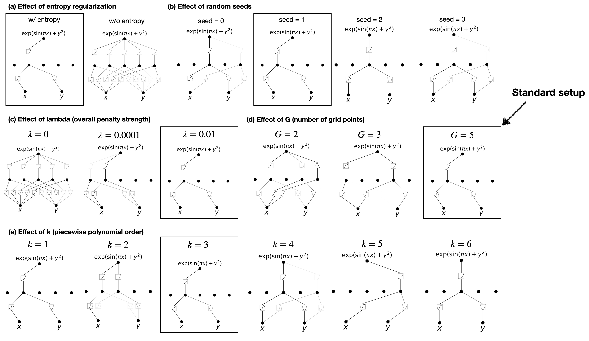
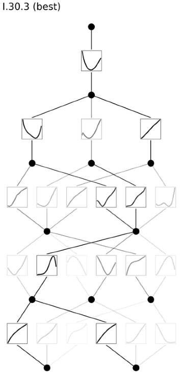
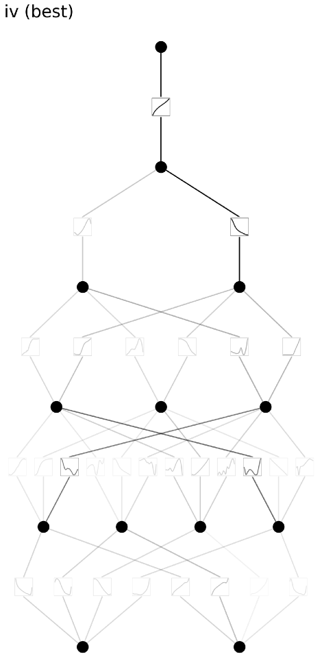
See Also
References
- On the expressiveness and spectral bias of KANs - Yixuan Wang, Jonathan W. Siegel et al. (2024)
- Rigor with machine learning from field theory to the Poincaré conjecture - Sergei Gukov, James Halverson et al. (2024)
- A Resource Model For Neural Scaling Law - Jinyeop Song, Ziming Liu et al. (2024)
- Sharp Lower Bounds on the Manifold Widths of Sobolev and Besov Spaces - Jonathan W. Siegel (2024)
- PirateNets: Physics-informed Deep Learning with Residual Adaptive Networks - Sifan Wang, Bowen Li et al. (2024)
- Deep Neural Networks and Finite Elements of Any Order on Arbitrary Dimensions - Juncai He, Jinchao Xu (2023)
- On the Kolmogorov neural networks - Aysu Ismayilova, V. Ismailov (2023)
- Sparse Autoencoders Find Highly Interpretable Features in Language Models - Hoagy Cunningham, Aidan Ewart et al. (2023)
- On the Optimal Expressive Power of ReLU DNNs and Its Application in Approximation With the Kolmogorov Superposition Theorem - Juncai He (2023)
- Multi-stage Neural Networks: Function Approximator of Machine Precision - Yongjian Wang, Ching-Yao Lai (2023)
- The Clock and the Pizza: Two Stories in Mechanistic Explanation of Neural Networks - Ziqian Zhong, Ziming Liu et al. (2023)
- Separable Physics-Informed Neural Networks - Junwoo Cho, Seungtae Nam et al. (2023)
- Seeing is Believing: Brain-Inspired Modular Training for Mechanistic Interpretability - Ziming Liu, Eric Gan et al. (2023)
- The Quantization Model of Neural Scaling - Eric J. Michaud, Ziming Liu et al. (2023)
- Progress measures for grokking via mechanistic interpretability - Neel Nanda, Lawrence Chan et al. (2023)
- Exact New Mobility Edges between Critical and Localized States. - Xiaoxia Zhou, Yongjian Wang et al. (2022)
- Exponentially Convergent Multiscale Finite Element Method - Yifan Chen, T. Hou et al. (2022)
- FC-PINO: High Precision Physics-Informed Neural Operators via Fourier Continuation - Ha Maust, Valentin Duruisseaux et al. (2022)
- Optimal Approximation Rates for Deep ReLU Neural Networks on Sobolev and Besov Spaces - Jonathan W. Siegel (2022)
- Reentrant delocalization transition in one-dimensional photonic quasicrystals - S. Vaidya, Christina Jörg et al. (2022)